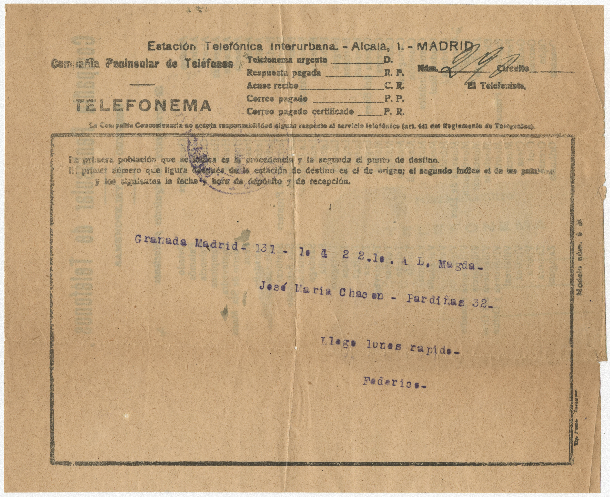
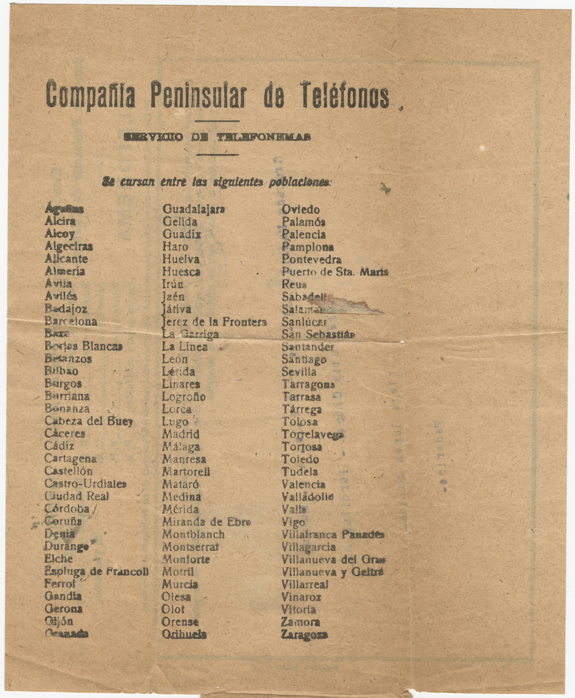
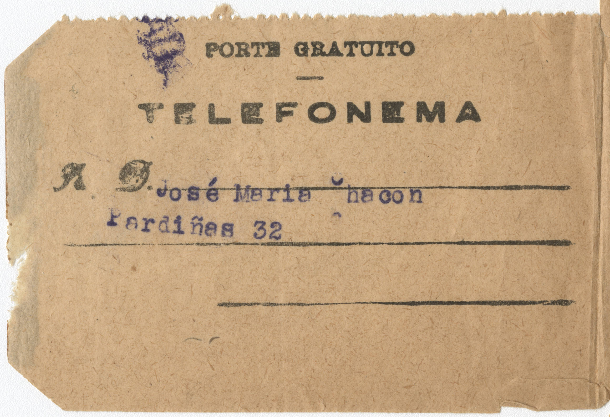

Carta de Federico García Lorca a José María Chacón y Calvo
Editada por: Trent D'Alesiso
Colección: Federico García Lorca Papers, Library Digital Collections, University of Miami
ID: chc5324000016Lugar y fecha: Granada (España),
Tamaño:
17cm
21cm
Nota:
Un telegrama simple de Lorca a José María para dar noticia que
va a llegar el lunes..

[La primera pagina de la telegrama tiene el mensaje de Lorca.
También tiene información para asegurar que el telegrama llega a su
destino ]
Granda Madrid - 131 - 1e 4 2 2.1e. A L. Magda-
José María Chacón - Pardiñas 32-
Llego lunes rápido-
Federico-

[La segunda página es una lista de todas las ciudades donde se
puede enviar telegrama ]

[ La tercera página es una confirmación de que el telegrama es
de Lorca a Chacón y Calvo ]